ID-spon, SM, 19-4-2005
Vergelijking Flow Opstellingen
Lijkt redelijk
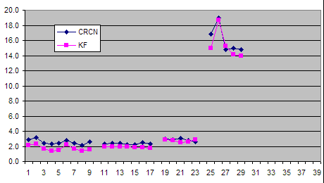
Toch 70% afwijking
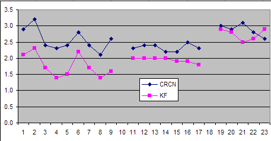
Vergelijking indivuele flow
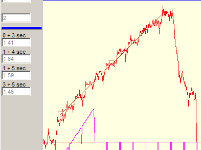 KF (mooier ??)
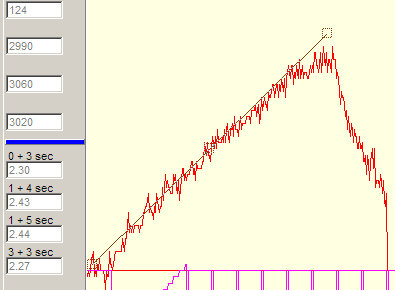 CRCN
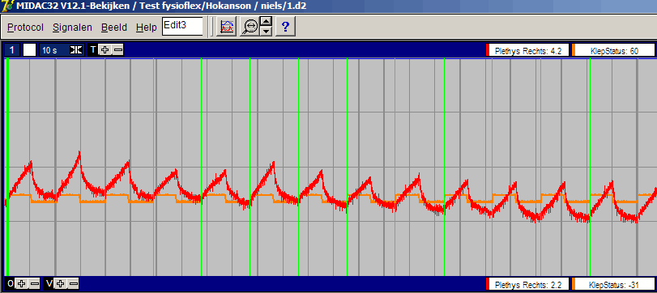
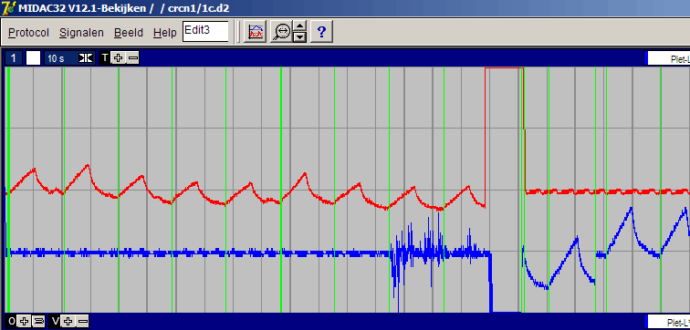
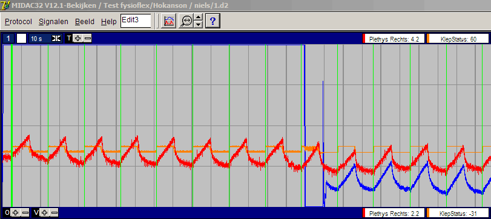
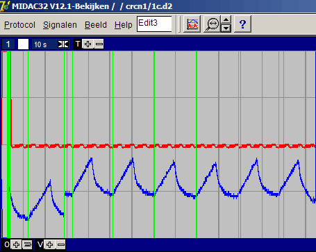
Vergelijking hoge flows
eerder verzadiging bij KF ????
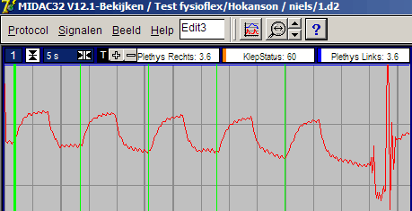 KF 52 tm 56
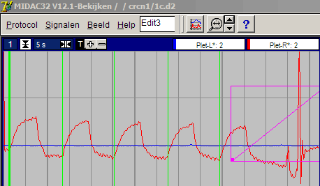 CRCN 26 t/m 30
Individuele hoge flow
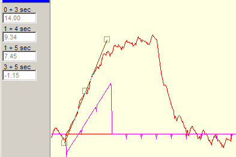 KF 56
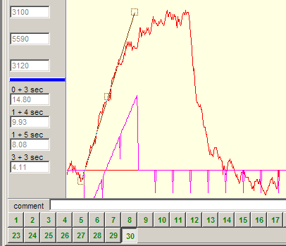 CRCN 30
Kunst-arm
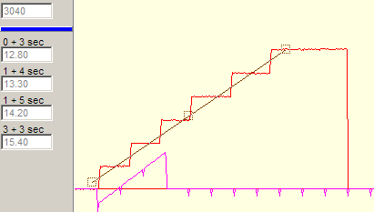
Grote stappen maximaal 2% volumeverandering
4.75 Ohm met 0 to 6 stuks 1k5 Ohm parallel
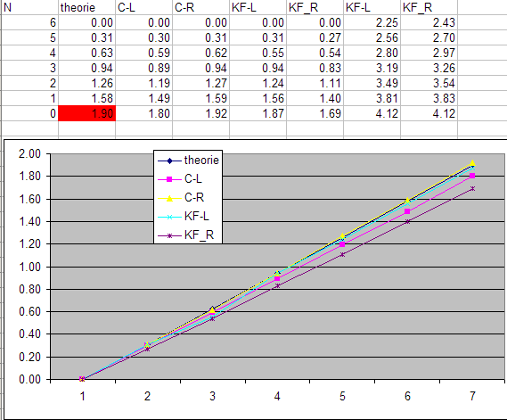
1% component afwijking, geeft 13% afwijking in bovenstaande grafiek !!
Kleine stappen maximaal 0.5% volumeverandering
1.5 Ohm met 0 to 6 stuks 1k5 Ohm parallel
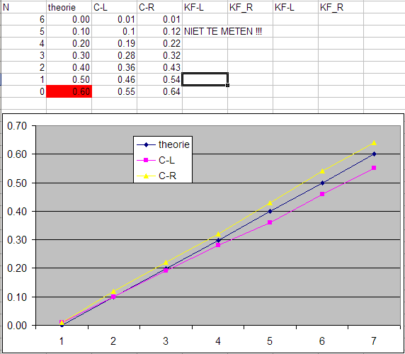
Lage flow buiten meetbereik KF
Niet helemaal eerlijk !!
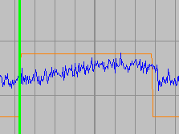 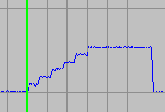
Klinische Fysiologie CRCN
DEZELFDE METING OP KUNSTARM, LAGE FLOW
Individueel vergelijking
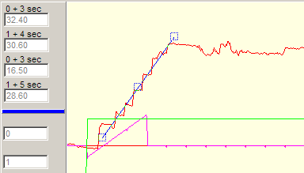 KF betrouwbaar ???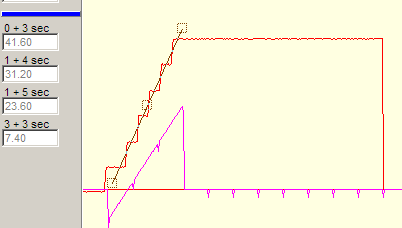 CRCN
Nog een
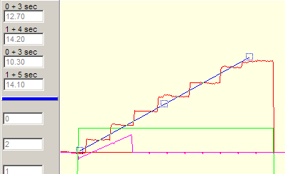 KF
CRCN
Is mijn model werkelijk zo goed ???
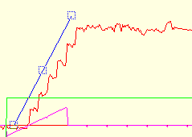 zie ik hier de polsgolf ???
Conclusie